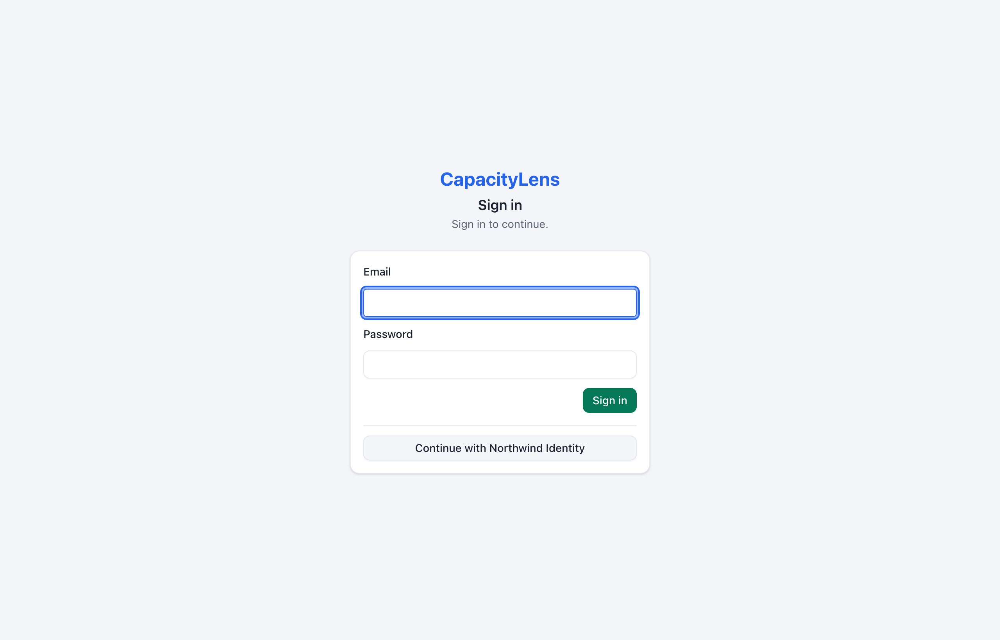
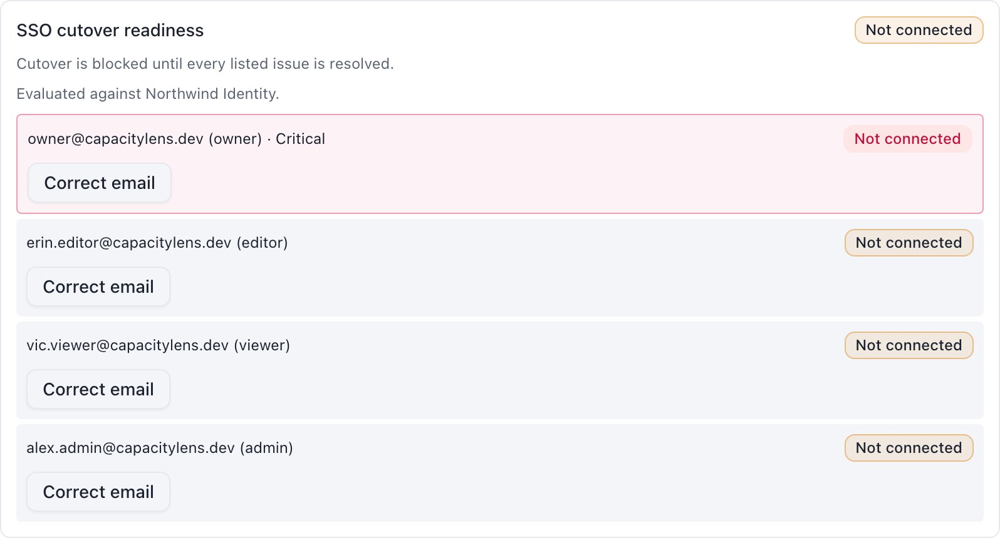
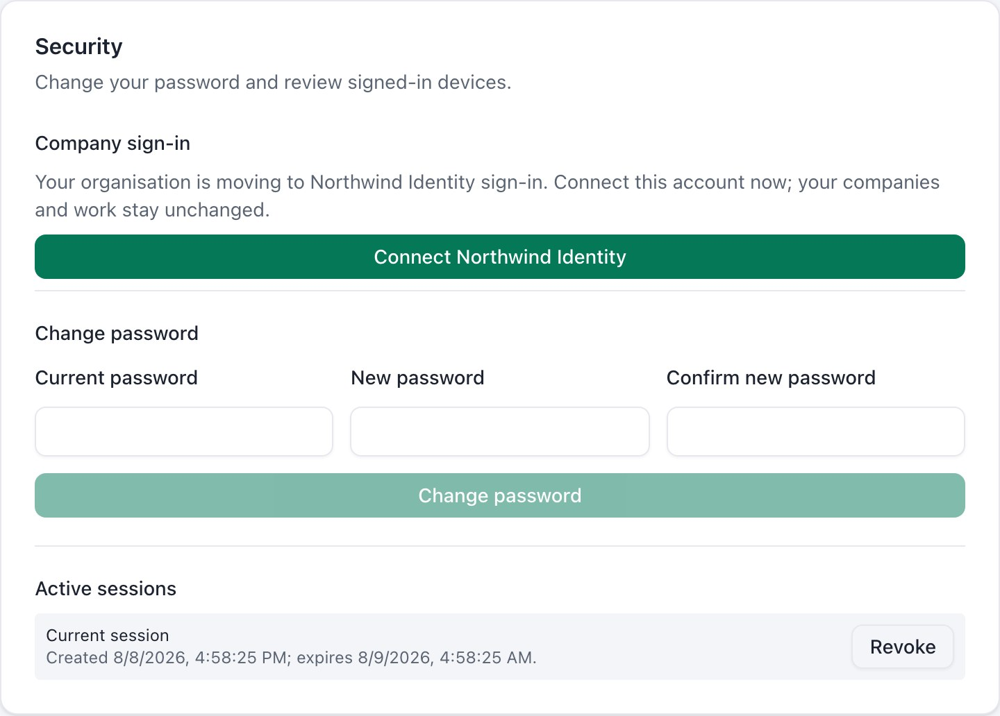
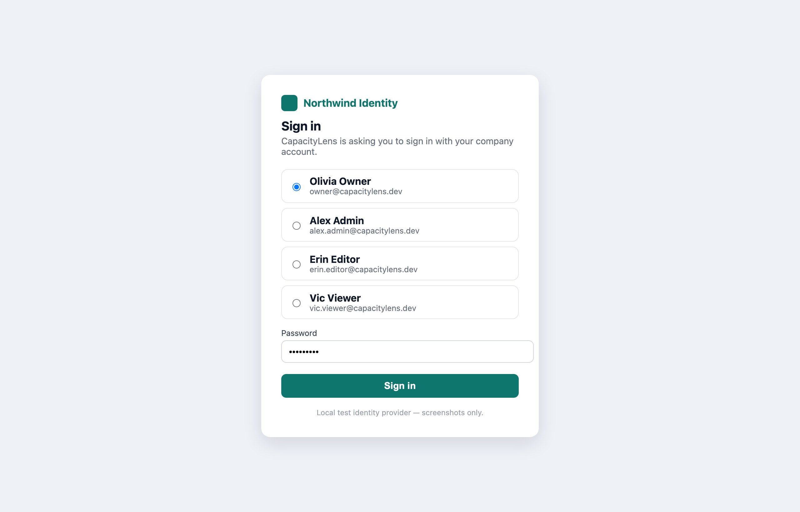
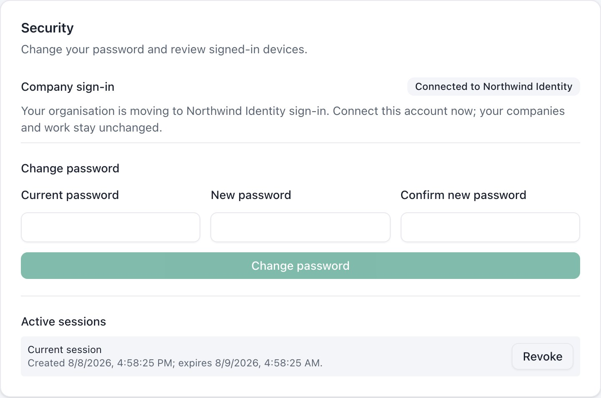
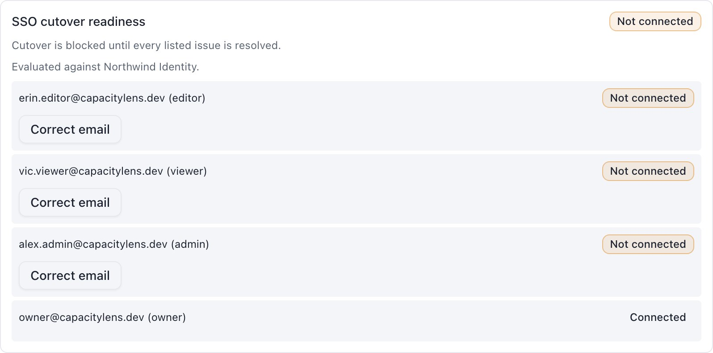
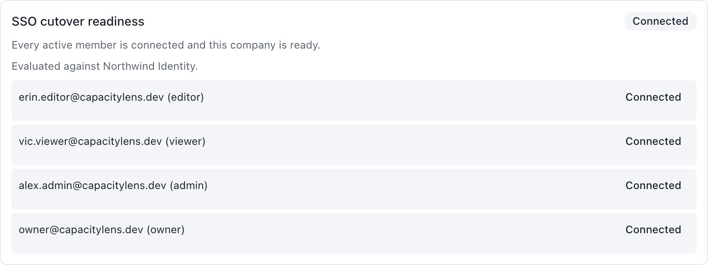
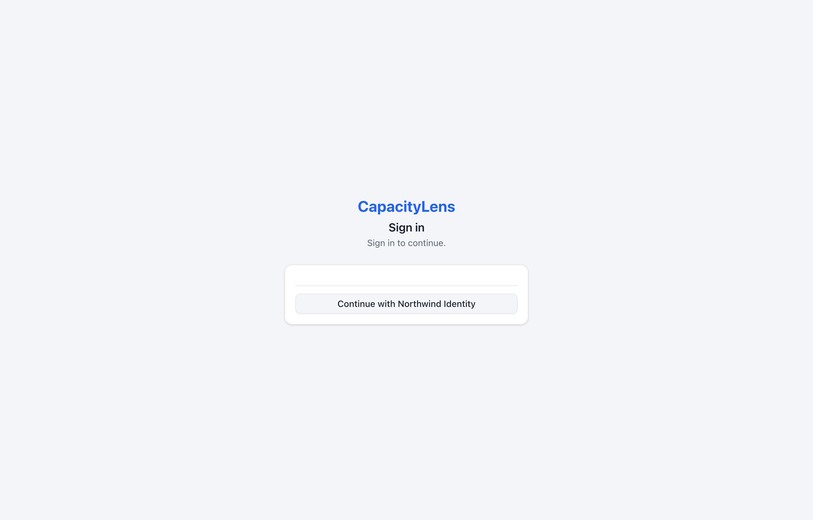
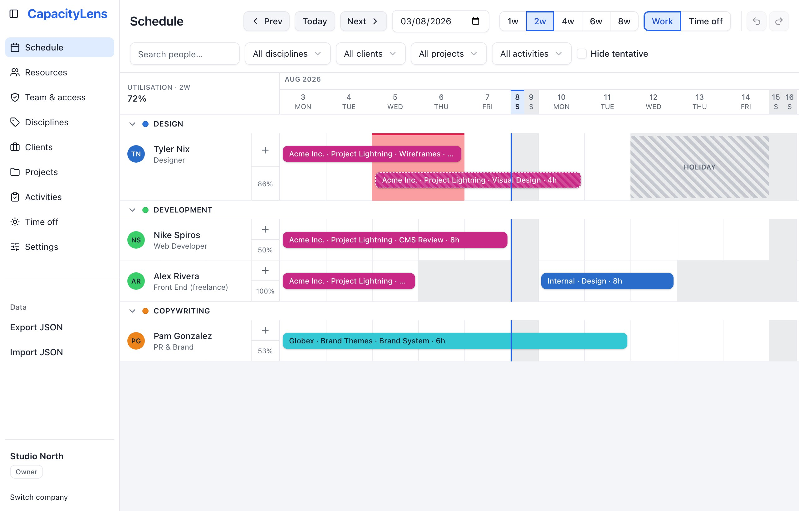

Moving your studio from passwords to single sign-on
You started on email and password because it took five minutes. Now the agency wants everyone signing in the way they sign into everything else at work — the Google or Microsoft or Okta account they already have. This page is the whole move, in nine steps, with a screenshot of every screen you'll see and a copy-paste block for every setting you'll change.
Nobody loses anything. Every person, company, role, Owner seat and every scheduled hour survives the move untouched. You are changing the front door, not the building.
Three stages, and you control when each one starts
The trick is the middle stage. You don't flip from passwords to SSO overnight and hope — you run both doors open at once for as long as you like, let everyone connect themselves, and only close the password door when the app tells you every single person is through.
Passwords only
Profile self-hosted-password
- Everyone signs in with email + password
- No company login connected
🚪 Password door open
Both doors open
Profile self-hosted-mixed
Mode password
- People still sign in with their password
- Each person connects their own SSO account
- Stay here days or weeks — no deadline
🚪 Password door open · 🚪 SSO door open
SSO only
Profile self-hosted-sso-only
Mode sso
- The password form is gone
- Passwords are kept but dormant — that's your way back
- New invitations must go through SSO
🚪 SSO door open
You can stop at stage two forever if you want to. Mixed mode is a supported way to run CapacityLens, not a temporary hack — some agencies stay there permanently so contractors keep passwords while staff use SSO.
CapacityLens matches a person to their company login by having them prove it themselves, while signed in with their password. It never guesses from the email address. That's deliberate: the address someone signed up with and the address their company login knows them by often barely resemble each other.
There is one rule you can't dodge: at the moment someone connects, the email their company login reports must be identical to their CapacityLens sign-in email. If they differ, you fix the CapacityLens side with a button (step 5) and they try again. Nobody has to change anything on the company login side.
What you need in front of you
| You need | Why | Where it comes from |
|---|---|---|
| A database backup | Your undo button. Take it before step 1 and again at step 7. | All your data lives in one file, capacitylens.db. Copy it while the app is stopped. |
| A way back to today's version | If you change your mind, you want to start exactly what you're running right now. | Don't delete or overwrite whatever you installed from — the download, or the version tag if you run it in Docker. |
| A login app in your company login | This is what lets CapacityLens hand people over to Google (or Microsoft, or Okta) and back. | Ten minutes in your provider's admin screens. Here's how, step by step. |
| Three values from it | The app's own ID and password, plus the address CapacityLens fetches the rest of the details from. | Shown when you create the login app. Keep the secret one somewhere safe. |
| One address pasted back in | Where your provider sends people after they've signed in. Without it, the very first click fails. | https://your-capacitylens-address/api/auth/oauth2/callback/sso |
| A quiet hour | Steps 7–9 are the disruptive window; step 8 signs everybody out, once. | Friday evening is traditional. |
Do the company login part first
Three of the things in that table come out of the system your staff already sign into for their email — Google Workspace, Microsoft 365, Okta, whatever yours is. Setting that up is a ten-minute job of clicking through admin screens, and it has nothing to do with the move itself, so it's written up on its own page:
Come back here when you have them. If someone has already set that up for you, you can skip straight on.
The actual moveNine steps, in order
Steps 1–7 are safe and reversible and nobody is signed out. Step 8 is the point of no easy return — so step 6 makes the computer prove you're ready before you get there.
Here's the whole job as nine headings. Open one at a time as you work through it — each one expands into exactly what to type, what to click and what you should see. Each heading also says who does it: Operator means whoever can restart the app and edit its settings file, Owner / Admin means someone signed in to CapacityLens with those permissions, and one step is for everybody.
-
Back up the database 5 minOperator
Stop the app, copy its data file somewhere safe, and label the copy "before SSO". Everything CapacityLens knows — every person, company and scheduled hour — lives in that one file. Also keep hold of whatever you installed the current version from: going back means starting yesterday's version again, so don't throw yesterday away.
TerminalDo this first# with the server stopped cp /var/lib/capacitylens/capacitylens.db \ /var/lib/capacitylens/backups/before-sso-$(date +%F).dbCopy the file while the server is stopped. A live copy can miss recent writes that are still sitting in a temporary side-file next to it.
-
Open the second door 10 minOperator
Add the six company-login settings you collected, and change the profile line to
self-hosted-mixed. Leave the mode aspassword— that line is what keeps the password door open. Then restart..env1 line changed · 6 lines added# --- what you already have, unchanged --- SMALLSASS_ACCOUNT_MODE=password SMALLSASS_ACCOUNT_SECRET=<your existing 32+ byte secret> SMALLSASS_ACCOUNT_PUBLIC_URL=https://planning.your-agency.comSMALLSASS_ACCOUNT_DEPLOYMENT_PROFILE=self-hosted-passwordSMALLSASS_ACCOUNT_DEPLOYMENT_PROFILE=self-hosted-mixed # --- new: your company login --- SMALLSASS_ACCOUNT_OIDC_CLIENT_ID=capacitylensSMALLSASS_ACCOUNT_OIDC_CLIENT_SECRET=<from your secret manager>SMALLSASS_ACCOUNT_OIDC_ISSUER=https://identity.your-agency.comSMALLSASS_ACCOUNT_OIDC_DISCOVERY_URL=https://identity.your-agency.com/.well-known/openid-configurationSMALLSASS_ACCOUNT_OIDC_SCOPES=openid profile emailSMALLSASS_ACCOUNT_OIDC_LABEL=Northwind IdentityLABELis just the words on the button your people will click, so use the name they'd recognise — "Northwind Identity", "Google", "Company login".Get the issuer line right first time, then leave it aloneThe first successful start ties this installation to that one company login, and every connection your people make afterwards is filed against it. Changing the issuer later cuts every one of them loose.
Restart and load the sign-in page. You should now see both doors — the ordinary email and password form, and a button for your provider:

Mixed mode. Everyone keeps signing in exactly as they did yesterday — the new button is there for the linking ceremony, not for signing in yet. What if the server refuses to start?
Good — that's the point. It checks your provider settings before it accepts a single request. The usual causes: the discovery URL doesn't resolve, the issuer in the discovery document doesn't exactly match
SMALLSASS_ACCOUNT_OIDC_ISSUER, one of the three things it asks for is missing, or your provider is set to the weak way of signing (HS256) instead of the normal one. Fix the setting it names and start again. Nothing has changed in the database yet.You don't need
SMALLSASS_ACCOUNT_OIDC_BOOTSTRAP_EMAILShere. That's for a brand-new empty install with nobody in it. You already have people. -
See who's connected 2 minOwner / Admin
Sign in with your password as usual, and go to Team & access. There's a new panel: SSO cutover readiness. Right now it will be a wall of "Not connected", and that's exactly what it should look like on day one.

Every active member of this company, and whether they've connected. The Owner is outlined in red and marked Critical — if the Owner can't get in after cutover, nobody can fix it from inside the app. This panel is your progress bar for the whole project. Check it whenever you like. It updates as people connect.
-
Everyone connects their own account 2 min eachEvery member
This is the part your people do, and it's the part you can't do for them — that's the security property. Send them this: "Go to Settings, find Company sign-in, click Connect."

Settings → Security → Company sign-in. One button. They get sent to your company login page, sign in there the way they always do, and come straight back.

Your own company login page — whatever that looks like for you, including any two-factor prompt. 
Done. That person is ready for cutover. And the readiness panel ticks over:

Owner connected. Do the Owner first — it's the one person who genuinely can't be recovered from inside the app. Three small things worth knowingConnecting doesn't sign them in anywhere new. No new session is created. They finish where they started.
They may be asked for their password again first. If they signed in more than fifteen minutes ago, CapacityLens re-checks that it's really them before letting them attach an identity. That's intentional.
Nobody is locked out while this happens. Take a week. Chase the stragglers in Slack. The app runs completely normally throughout.
-
Fix the mismatches variesOwner / Admin
Some people won't go green on the first try, and the panel tells you why in plain words. Here's every message you can get and what to do about it:
The panel says What actually happened What you do Not connected They haven't done step 4 yet. Nudge them. If their CapacityLens email is wrong or stale, use Correct email. Reconnect to verify Your company login didn't confirm that the email address is a real, verified one. Mark the address verified in your company login, then Remove link and have them connect again. Multiple provider links Two identities are attached to one person — usually a half-finished earlier attempt. Remove link on the wrong one, keep the right one. Provider account claimed twice Two CapacityLens people connected to the same company account. Shared logins, usually. Work out from your company login which person is which, Remove link from the wrong one, and have them connect their own account. Unsupported provider link They connected via a different provider (a social login), not the company one. Remove link, then have them connect the company provider. Identity record missing A membership with no identity behind it. Rare, and not self-service. See the repair commands in runbook.md. Correct email is the button for the situation the whole cutover usually hinges on: someone signed up as
dave@agency.combut the company login knows him asdavid.smith@agency.co.uk. Change the CapacityLens side to match, and he can connect.Both repair buttons sign that person out on purpose. They sign back in with their password and connect again. Tell them before you click, or you'll get a message asking why they got kicked out.
Both buttons only exist while you're in mixed mode. Once you're SSO-only they're gone — repairs from there are stopped-server commands, which is the deliberate difficulty of an unlocked front door.
Keep going until it looks like this:

"Every active member is connected and this company is ready." That's per company — if you host several, every one of them needs to reach this state. Someone left the agency? There's no "deactivate" state in CapacityLens. Remove them in Team & access and they stop blocking.
-
Let the computer check your work 1 minOperator
The panel shows one company at a time. This command checks everything — every company, plus integrity problems the panel can't show you. Run it with the server still up, pointing at your database file.
TerminalThe green lightpnpm --filter capacitylens-server cutover:preflight -- /absolute/path/to/capacitylens.dbIf you are ready, it prints a report starting with
"ready": trueand exits 0:Output — ready to cut overexit 0{ "ready": true, "provider": { "id": "sso", "label": "Northwind Identity", "kind": "oidc", "experimental": false }, "workspaces": [ { "workspaceId": "a-studio", "workspaceName": "Studio North", "ready": true, "members": [ { "email": "owner@example.com", "displayName": "Olivia Owner", "role": "owner", "linked": true, "blocking": false, "reason": "ready" }, ... ], "issues": [] } ], "issues": [] }If you are not ready, it names every person standing between you and cutover, and exits non-zero:
Output — not ready yetexit 1 · stop here{ "ready": false, ... "issues": [ { "reason": "member_not_linked", "message": "owner@example.com (owner) is not ready for strict OIDC cutover (member_not_linked).", "blocking": true, "critical": true, "workspaceId": "a-studio" }, { "reason": "member_not_linked", "message": "alex.admin@example.com (admin) is not ready for strict OIDC cutover (member_not_linked).", "blocking": true, "critical": false, "workspaceId": "a-studio" } ] } -
Stop the server and back up again 5 minOperator
Stop CapacityLens and stop traffic reaching it. Take a second backup and label it "cutover point". This is the snapshot you'd restore to if something genuinely surprising happens — the step-1 backup is now hours or weeks out of date.
TerminalSecond backupcp /var/lib/capacitylens/capacitylens.db \ /var/lib/capacitylens/backups/cutover-point-$(date +%F).db -
Close the password door 2 minOperator
Two lines change. Everything else — including all the company-login settings — stays exactly as it is.
.env2 lines changedSMALLSASS_ACCOUNT_DEPLOYMENT_PROFILE=self-hosted-mixedSMALLSASS_ACCOUNT_MODE=passwordSMALLSASS_ACCOUNT_DEPLOYMENT_PROFILE=self-hosted-sso-onlySMALLSASS_ACCOUNT_MODE=sso # everything below is unchanged SMALLSASS_ACCOUNT_OIDC_CLIENT_ID=capacitylens SMALLSASS_ACCOUNT_OIDC_CLIENT_SECRET=<from your secret manager> SMALLSASS_ACCOUNT_OIDC_ISSUER=https://identity.your-agency.com SMALLSASS_ACCOUNT_OIDC_DISCOVERY_URL=https://identity.your-agency.com/.well-known/openid-configuration SMALLSASS_ACCOUNT_OIDC_SCOPES=openid profile email SMALLSASS_ACCOUNT_OIDC_LABEL=Northwind IdentityLeave open signup unset. Now start the server.
On this first SSO-only start, CapacityLens checks readiness one final time before it changes anything. If it isn't satisfied it refuses to start and tells you who to fix — the same names, at the terminal:
Server log — refused to startNot a bugcapacitylens-server: refusing to start — SSO cutover readiness failed. owner@example.com (owner) is not ready for strict OIDC cutover (member_not_linked). alex.admin@example.com (admin) is not ready for strict OIDC cutover (member_not_linked).If you see that, put the two lines back to
self-hosted-mixed/password, restart, and finish step 4 and step 5. Nothing has been changed.If it's satisfied, it goes ahead and — in one atomic move — it:
- signs everybody out, including you;
- cancels every pending password-reset and verification link;
- writes a permanent marker recording that this installation has cut over;
- records an audit event,
identity.sso_cutover_activated.
That mass sign-out is the whole point: it guarantees no session that was created behind a password outlives the password door. It happens exactly once. Later restarts don't sign anyone out.
-
Check it, properly 10 minOperator
Load the sign-in page. The password form is gone:

SSO only. One door. Sign in through the provider. You should land straight in the schedule, with your role intact:

Same company, same Owner badge, same allocations, same everything. Only the front door changed. Before you tell the agency it's done, tick these off:
- Owner signs in and can still reach Team & access;
- every company you host opens, if you host more than one;
- a test invitation works end to end (see the note below);
- signing someone out from Team & access still works;
- one ordinary member confirms they got in without you helping.
New joiners from now on: an invitation must pre-authorise the exact email address the company login will report. There's no "sign up with a password" path any more, so a typo in the invitation is a person who can't get in.
{kind=link}
{kind=link}
{kind=link}
{kind=link}
{kind=link}
{kind=link}
{kind=link}
{kind=link}
{kind=link}
Your way back
Cutover keeps everybody's password. It's dormant, not deleted. That is deliberately your escape hatch, and using it is two lines and a restart.
SMALLSASS_ACCOUNT_DEPLOYMENT_PROFILE=self-hosted-mixed
SMALLSASS_ACCOUNT_MODE=passwordStop the server, change those two lines back, start it again. The password form returns and everyone who had a password before cutover can sign in with it. Your company-login settings can stay exactly where they are — you're back in mixed mode, both doors open, which is a perfectly good place to sit while you work out what happened.
Two things that limit that escape hatch
| Situation | What to do |
|---|---|
| People who joined after cutover | They never had a password, so reverting doesn't give them one. Once you're back in mixed mode, issue each of them a password reset. The longer you run SSO-only, the more of these there are — rollback gets less complete over time, so don't treat it as a permanent safety net. |
| The sole Owner has lost their password too |
Stop the server and run
pnpm --filter capacitylens-server reset:owner-password. It sets a credential; it does
not create a session. Restart in mixed mode, redeem the link, then sign in.
|
Your company login is down
Restrict traffic if you need to, roll back to mixed mode using the two lines above, and write down that you did. Go back to SSO-only only once the provider is healthy and preflight passes again — it's the same step 6 command, and it's just as binding the second time.
Something the buttons can't fix
A handful of states need the server stopped and an explicit command: a duplicate provider subject that predates the migration, an account with no membership left, a company whose Owner is gone. Those live in runbook.md under "Cutover repair commands", each with its own guard rails. Never edit the authentication tables by hand — you'd skip the session cleanup and the audit trail, and you'd be the only person who knows.
Straight answersQuestions people actually ask
Do people lose their work, their companies, or their role?
No. Not one row. Cutover changes how someone proves who they are; it doesn't touch who they are, what they're a member of, or anything on the schedule.
Our company-login emails look nothing like our CapacityLens emails. Is this a nightmare?
It's the normal case, and it's what step 5 exists for. CapacityLens never matches people by email — each person proves the connection themselves while signed in. The only requirement is that the two addresses match at the moment they connect, and Correct email lets an Admin fix the CapacityLens side in seconds. After the connection is stored, the emails are free to diverge again: the link is held by the provider's subject identifier, not the address.
Can we just stay in mixed mode?
Yes, indefinitely. It's a supported posture, not a migration state. Plenty of agencies want staff on SSO and freelancers on passwords, and that's exactly what mixed mode is.
How long can we take?
As long as you like. Steps 2 to 6 have no clock on them and no user impact. Only step 7 onwards has a disruptive moment, and it's one mass sign-out.
Will everyone be signed out?
Once, at the first SSO-only start. Everyone signs back in through the provider. After that, restarts are uneventful.
Do we have to do all our companies at the same time?
Yes. The profile is per installation, not per company, and preflight checks every company. Every company on the server has to be ready before any of them can cut over.
Can we skip the preflight if we're confident?
You can skip running it yourself, but you can't skip it — the server runs the same check at startup and refuses to proceed. There's no override. Better to see the refusal in a terminal at your own pace than in a failed deploy.
What about the "Continue with Google/Microsoft/GitHub" style buttons?
Those are separate, experimental, named social providers. After cutover they can let an existing person sign in, but they can't create anyone new, and invitations always require the company provider. If you enable one, check its two-factor and account-recovery settings as carefully as your main login's — it's a door into the same building.
Are passwords deleted at cutover?
No — kept, but dormant. That's what makes rollback possible. If you want them genuinely gone, that's a separate decision to make deliberately once you're confident you'll never roll back.
Going deeper
setup-guide.html (first install) · company-login-guide.html (creating the login app in Google, Microsoft, Okta or Keycloak) · authentication.md (the full technical detail, if you want it) · runbook.md (the operator procedure and every repair command) · self-hosting.md (Docker, upgrades, backups) · onboarding-and-access.md (roles and invitations).